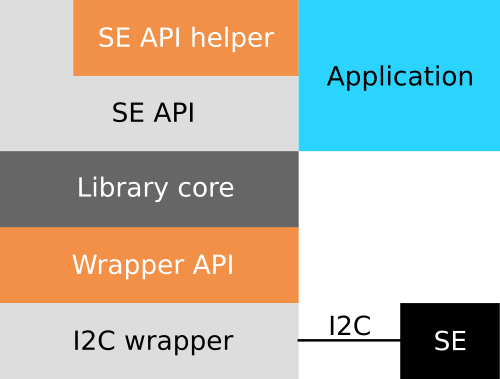

libTO overview¶
The libTO is to be integrated as part of your software to provide to your application an interface to easily deal with Secure Element features. It aims to help developers to work with TO, as an abstraction layer between its API and I2C communications.
The library is designed to be able to run on MCUs, as on Linux embedded hardware. Dynamic allocation is not used by the library, and it tries to use standard C APIs.
Overall architecture¶
Below is detailed the library architecture.
(you can click the image to obtain details about library different parts)
Two developer’s APIs are available to use from your application: Secure Element API and Helper API.
These APIs are using library internal mechanisms to abstract TO communication protocol. However, this internal layer provides Library core APIs, which you may want to use for debugging or advanced uses.
The communication flow can (optionally) rely on a Secure Link protocol, which aims to encrypt and authenticate communication between Secure Element and MCU. If needed, request documentation about Secure Link to Trusted Objects.
Finally, everything relies on an I2C wrapper, which is hardware dependent, internally accessed through the I2C wrapper API.
Library files tree¶
The library files tree structure is the following:
- /include: headers providing library APIs, see Provided APIs
- /src: library sources
- /wrapper: I2C wrappers, to abstract Secure Element I2C communications, a .C file is provided for every supported platform, and you are free to implement your own, see I2C wrapper
- /examples: some examples to use the library from your project
Limitations¶
Multi-process environments¶
Warning
Due to the underlying I2C bus, the library is not designed to be used simultaneously by different processes, so doing that may cause undefined behavior.
If you need to use the library from different processes or execution threads, we recommend to embed the library into a dedicated process to handle concurrency, on which the other ones rely.